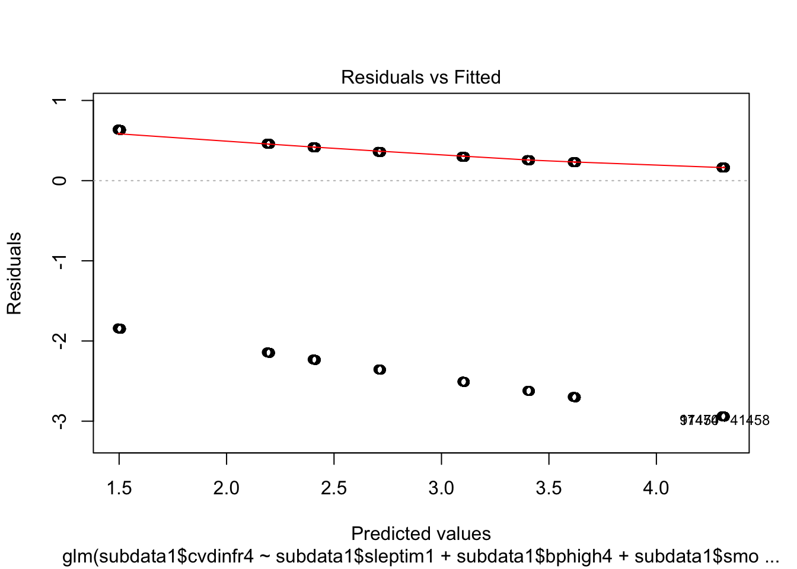
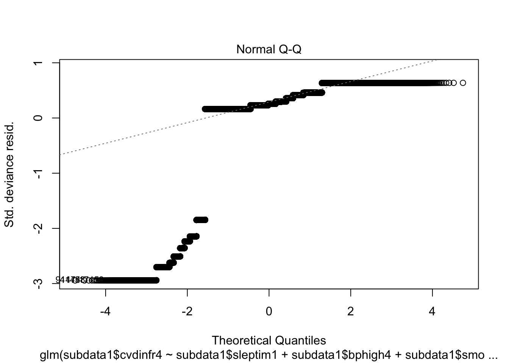
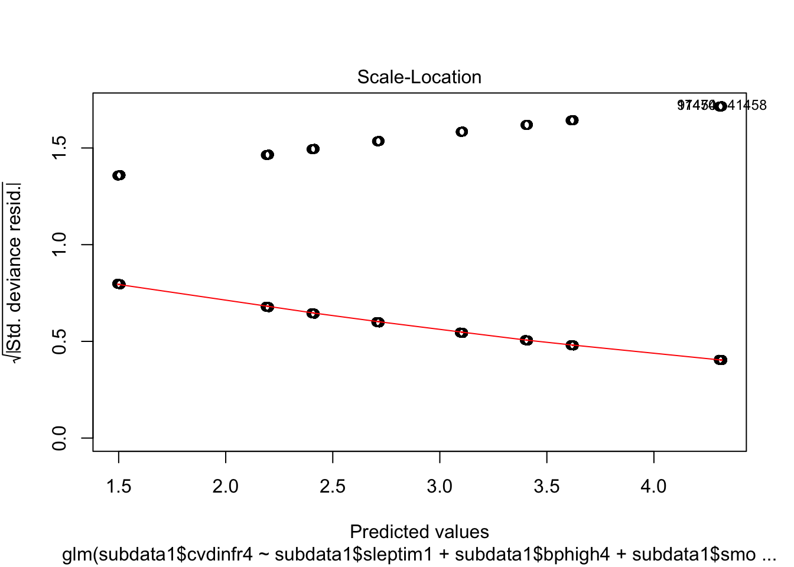
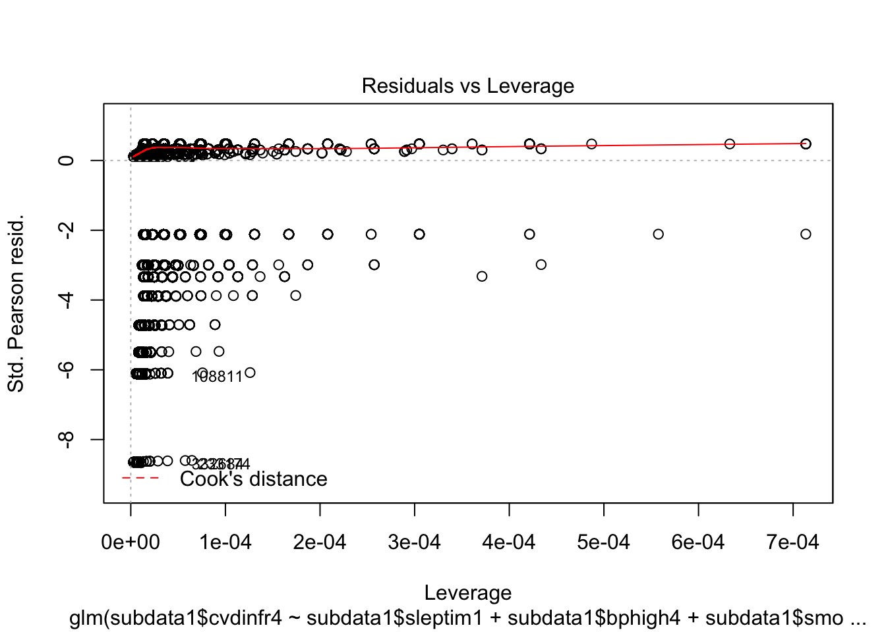

Q3 <- names(brfss2013) %in% c("cvdinfr4","smoke100","toldhi2", "bphigh4", "sleptim1")
subdata <- brfss2013[Q3]
subdata$cvdinfr4 <- replace(subdata$cvdinfr4, which(is.na(subdata$cvdinfr4)), "No")
#Make sure that No NA index in our data, so that we have better significance
summary(subdata$cvdinfr4)## Yes No
## 29284 462491#Treat those NA’s into No for smoker, so that I have better conclusion in the end.
subdata$smoke100 <- replace(subdata$smoke100,which(is.na(subdata$smoke100)),"No")
summary(subdata$smoke100)## Yes No
## 215201 276574#Treat those NA’s into No for smoker, so that I have better conclusion in the end.
subdata$smoke100 <- replace(subdata$smoke100,which(is.na(subdata$smoke100)),"No")
#Now I want to treat the NA to be the No, so that it is easier for me to conclude later. We
subdata$toldhi2 <- replace(subdata$toldhi2, which(is.na(subdata$toldhi2)), "No")
summary(subdata$toldhi2)## Yes No
## 183501 308274#Look at HIGH blood Pressure Data
table(subdata$bphigh4)##
## Yes
## 198921
## Yes, but female told only during pregnancy
## 3680
## No
## 282687
## Told borderline or pre-hypertensive
## 5067#I have to make sure that female told only during pregnancy to Yes, and told borderline or pre-hypertensive to Yes. In order to make sure logistic regression.
subdata1 <- subdata
subdata1$bphigh4 <- as.factor(ifelse(subdata1$bphigh4=="Yes", "Yes", (ifelse(subdata1$bphigh4=="Yes, but female told only during pregnancy", "Yes",(ifelse(subdata1$bphigh4=="Told borderline or pre-hypertensive", "Yes", "No"))))))
table(subdata1$bphigh4)##
## No Yes
## 282687 207668#Now we have better data:
table(subdata1$bphigh4)##
## No Yes
## 282687 207668Q3 <- glm(subdata1$cvdinfr4 ~ subdata1$sleptim1+subdata1$bphigh4+subdata1$smoke100+subdata1$toldhi2, data=subdata1, family = "binomial")
summary(Q3)##
## Call:
## glm(formula = subdata1$cvdinfr4 ~ subdata1$sleptim1 + subdata1$bphigh4 +
## subdata1$smoke100 + subdata1$toldhi2, family = "binomial",
## data = subdata1)
##
## Deviance Residuals:
## Min 1Q Median 3Q Max
## -2.9435 0.1630 0.2551 0.4145 0.6367
##
## Coefficients:
## Estimate Std. Error z value Pr(>|z|)
## (Intercept) 2.7193984 0.0321865 84.489 <2e-16 ***
## subdata1$sleptim1 -0.0006745 0.0040312 -0.167 0.867
## subdata1$bphigh4Yes -1.2100482 0.0147595 -81.984 <2e-16 ***
## subdata1$smoke100No 0.6933410 0.0129044 53.729 <2e-16 ***
## subdata1$toldhi2No 0.9066816 0.0136442 66.452 <2e-16 ***
## ---
## Signif. codes: 0 '***' 0.001 '**' 0.01 '*' 0.05 '.' 0.1 ' ' 1
##
## (Dispersion parameter for binomial family taken to be 1)
##
## Null deviance: 216130 on 483139 degrees of freedom
## Residual deviance: 194158 on 483135 degrees of freedom
## (8635 observations deleted due to missingness)
## AIC: 194168
##
## Number of Fisher Scoring iterations: 6plot(Q3)